Clinical Outcomes
CEA Fundamentals: Valuing Outcomes
Learning Objectives and Outline
00
Learning Objectives
Understand the concepts of summary measures of health, specifically, quality-adjusted life years (QALYs)
Describe the general differences between direct and indirect methods for estimating health state utilities
Curate model parameters for quantifying “benefits” (the denominator in the C/E ratio)
Outline
01
02
Summary Measurements
03
Where to get values
ICER review
Numerator (costs)
Valued in monetary terms
Examples:
- $USD
- ₦NGN
- KES
- R
\frac{\colorbox{#CfAE70}{$C_1 - C_0 \quad (\Delta C)$}}{E_1 - E_0 \quad (\Delta E)}
Denominator (benefits)
Valued in terms of clinical outcomes
Examples:
- # of HIV cases prevented
- # of children seizure free
- # of quality-adjusted life years gained
\frac{C_1 - C_0 \quad (\Delta C)}{\colorbox{#CfAE70}{$E_1 - E_0 \quad (\Delta E)$}}
Benefits
- What’s important for the question at hand
- Most analyses report several different outcomes
- QALYs/DALYs enable comparability across disease areas
Valuing Health Outcomes
Clinical Outcomes
01
What are they?
Clinical outcomes allow us to measure particular events in a decision tree or health economic model.
For Example:
# of HIV cases prevented
# of children seizure free
# of healthy pregnancies
# of hospital visits
# of disease deaths
# of cancer progressions
When are they be used
- Policy holders need the information
- The outcome holds high importance
- Short-term models
How do you choose one?
“Is implementing screening for colon cancer cost-effective?”
What concerns might arise for each of these?
- Number of cases of colon cancer Screening will increase the number of cases caught.
- Number of cases of STAGE 1 colon cancer Could heavily favor Screening
- Number of cancer deaths Deaths aren’t the healthcare burden
- Number of hospitalizations from colon cancer Minimal Data
- Number of screenings completed Focuses on implementation
- etc.
All these are still great outcomes, they just highlight important considerations when choosing the one for your research question
A Well Defined Clinical Outcome
- Specific
- Combining too many events can make it hard to understand the strategies impact, instead consider multiple outcomes
- Prevent biasing a strategy
- Make sure that your chosen outcome truly tells the story of what is happening.
- One of the quirks of modeling is that bad events are sometimes economically good. For example, death is very low cost.
- Make sure that your chosen outcome truly tells the story of what is happening.
- Answers your research question
- The outcomes chosen should provide impactful information
- Focus the computation power on metrics that are important to the research question and policy holders
- Data is available
- As with much of economic modeling, clinical outcomes rely on accurate data.
Summary Measurements
02
Why summary measures of health?
QALYs and DALYs both provide a summary measure of health
Allow comparison of health attainment/disease burden
- Across diseases
- Across populations
- Over time
- Etc.
Intro to QALYs
Origin story: welfare economics
- Utility = holistic measure of satisfaction or well-being
With QALYs, two dimensions of interest:
Length of life
measured in life-years
Quality of life
measured by utility weight, usually between 0 and 1
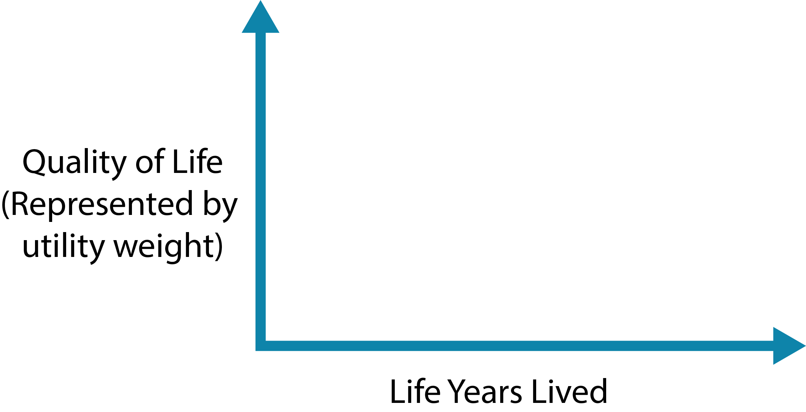
QALYs
A metric that reflects both changes in life expectancy and quality of life (pain, function, or both).
Formula:
Quality Adjusted Life Years =
Sum of weight * duration of life
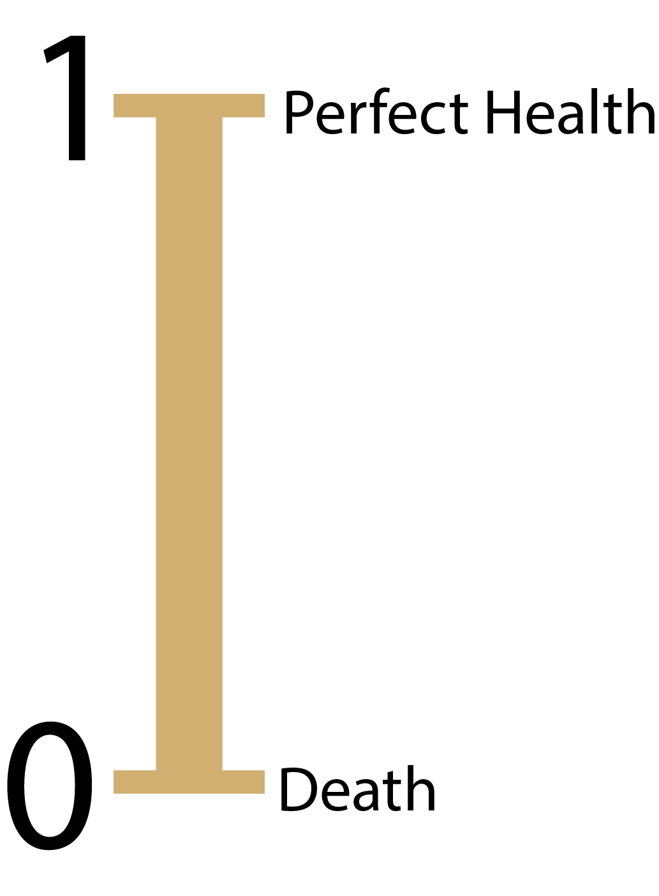
Example: Patient with coronary heart disease (with surgery)
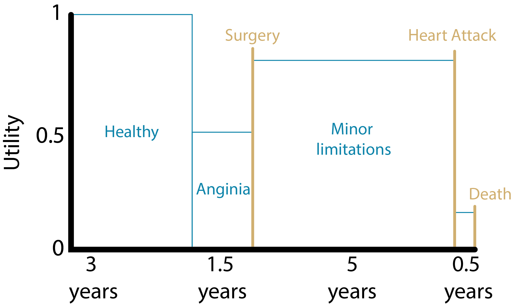
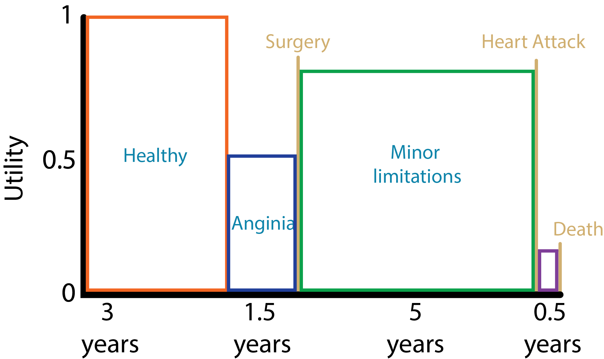
QALYS = (3yrs * 1.000) + (1.5yrs * 0.5) + (5yrs * 0.75) + (0.5yrs * 0.25)
= 7.625 QALYs
Source: Harvard Decision Science
Example: Patient with coronary heart disease (without surgery)
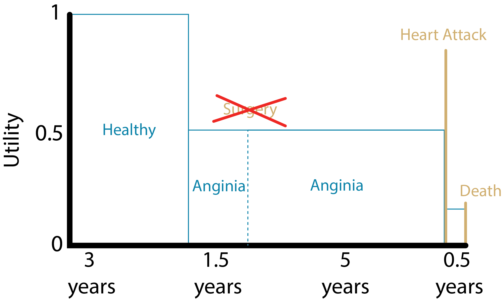
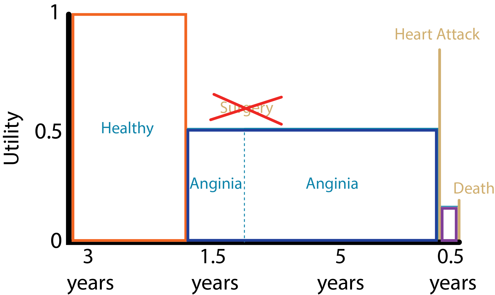
QALYS = (3yrs * 1.000) + (1.5yrs * 0.5) + (5yrs * 0.5) + (0.5yrs * 0.25)
= 6.375 QALYs
Source: Harvard Decision Science
Example: Patient with coronary heart disease
Life Years
- With surgery: 10 LYs
- Without surgery: 10 LYs
- Benefit from surgery intervention:
10LYs – 10LYs
= 0 LYs
QALYs
- With surgery: 7.625 QALYs
- Without surgery: 6.375 QALYs
- Benefit from surgery intervention:
7.625 QALYs – 6.375 QALYs
= 1.25 QALYs
Utility weights – How are they obtained?
- Utility weights for most health states are between 0 (death) and 1 (perfect health)
Direct methods:
- Standard gamble
- Time trade-Off
- Rating scales
Indirect methods:
- EQ-5D
- Other utility instrument: SF-36; Health Utilities Index (HUI)
Direct methods - Standard Gamble (SG)
What risk of death would you accept in order to avoid [living with an amputated leg for the rest of your life] and live the rest of your life in perfect health?
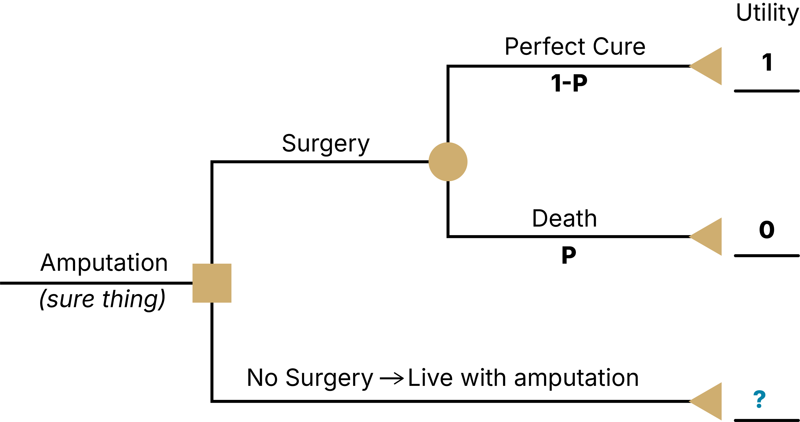
- Find the threshold p that sets EV(A) = EV(B)
- Assume respondent answered that they would be indifferent between A and B at a threshold of pDeath = 0.10
- Then U(Amputation) = p*U(Death) + (1-p)*U(Perfect Health) = 0.10*0 + (1-0.10)*1 = 0.9 = threshold of indifference between surgery & no surgery (I will live with this rather than have a high risk of dying)
Direct methods - Standard Gamble (SG)
What risk of death would you accept in order to avoid [living with stroke for the rest of your life] and livethe rest of your life in perfect health?
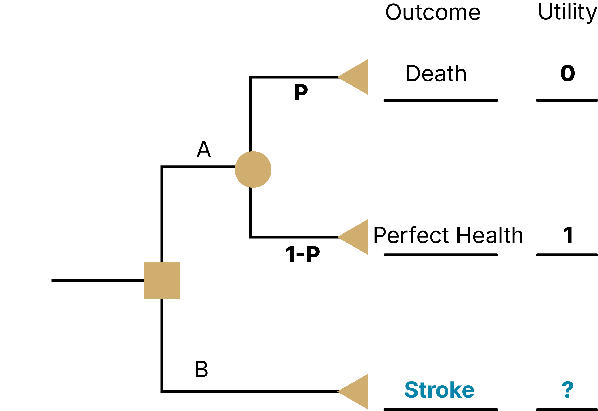
As a result of a stroke, you
Have impaired use of your left arm and leg
Need some help bathing and dressing
Need a cane or other device to walk
Experience mild pain a few days per week
Are able to work, with some modifications
Need assistance with shopping, household chores, errands
Feel anxious and depressed sometimes
Direct methods - Time Trade-Off (TTO)
An alternative to standard gamble
Instead of risk of death, TTO uses time alive to value health states
Does not involve uncertainty in choices
Task might be easier for some respondents compared to standard gamble
Direct methods - Time Trade-Off (TTO)
What portion of your current life expectancy of 40 years would you give up to improve your current health state stroke to ‘perfect health’?
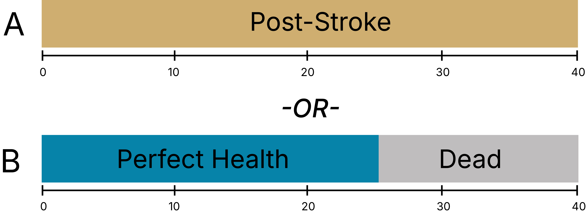
}U(Post-Stroke) * 40 years = U(Perfect Health) * 25 years + U(Dead) * 15 years
U(Post-Stroke) * 40 years = 1 * 25 years + 0 * 15 years
U(Post-Stroke) = 25/40 = 0.625
SG vs TTO
Standard Gamble
- Represents decision-making under uncertainty
- Only valuing the health state
- Risk posture is captured (risk aversion for death)
- Utility values usually > TTO for same state
Time Trade-Off
- Is decision-making under certainty
- Might inadvertently capture time preference (i.e., we might value health in the future less than we do today)
- Risk posture is NOT captured
- Utility values usually < SG for same state
Rating scales
Example:
On a scale where 0 represents death and 100 represents perfect health, what number would you say best describes your health state over the past 2 weeks?“.
Problem:
It does not have the interval property we desire. For example, a value of “90” on this scale is not necessarily twice as good as a value of “45”
Visual Analogue Scale (VAS)
The Visual Analog Scale (VAS) is a commonly-used rating scale
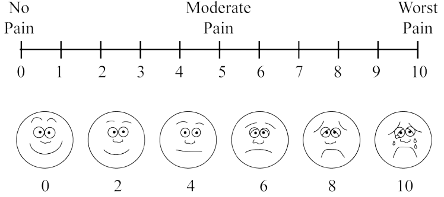
Direct methods – Rating scales
- Easy to use: Rating scales often used where time or cognitive ability/literacy prevents use of other methods
- Very subjective and prone to more extreme answers! Usually, utilities for VAS < TTO < SG
Indirect methods - EQ-5D
System for describing health states
5 domains: mobility; self-care; usual activities; pain/discomfort; and anxiety/depression
3 levels: 243 distinct health states (e.g. 11223)
Valuations elicited through population based surveys with VAS, TTO
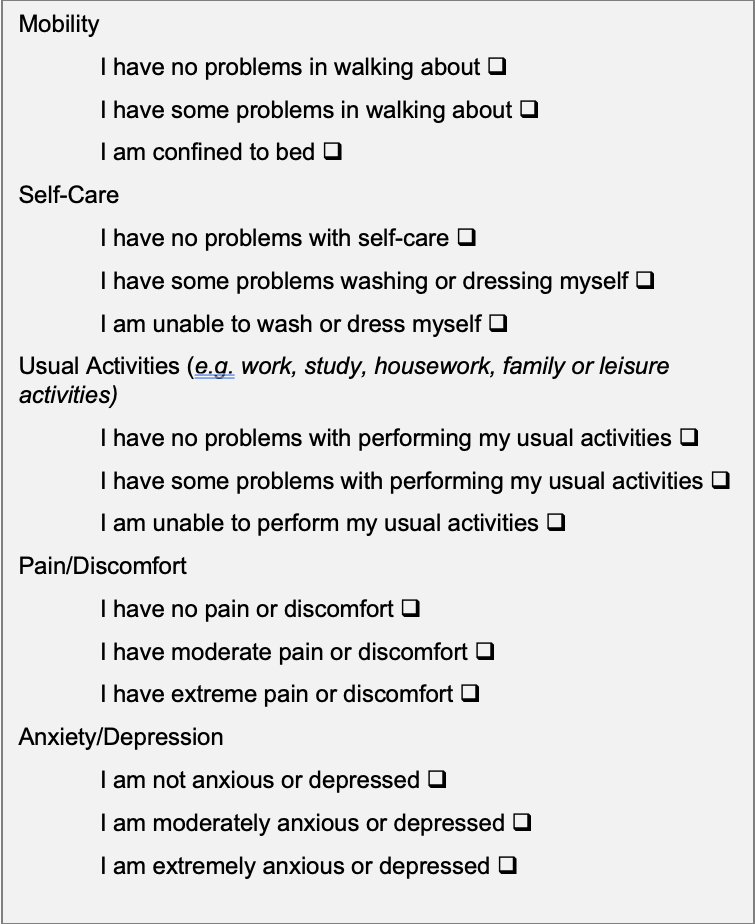
Indirect methods
HUI
Health Utility Index
EQ5D
EuroQol health status measure
SF-6D
Converts SF-36 & SF-12 scores to utilities
QWB
Quality of well-being scale
Intro to DALYs
Origin story: Global Burden of Disease Study
Deliberately a measure of health, not welfare/utility
With DALYs, two dimensions of interest:
Length of life
differences in life expectancy
Quality of life
measured by disability weight
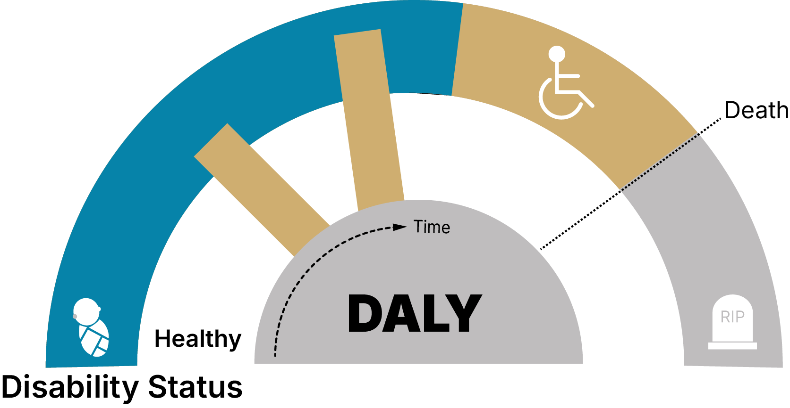
DALYs Formula
Years of Life Lost (YLL)
Changes in life expectancy, calculated from comparison to synthetic life table
DALYs = YLL + YLD
Example:
Providing HIV treatment delays death from age 30 to age 50.
Life years gained = 20 years
YLL = ??
Synthetic, Reference Life Table
| Age | Life Expectancy |
|---|---|
| 0 | 88.9 |
| 1 | 88.0 |
| 5 | 84.0 |
| 10 | 79.0 |
| 15 | 74.1 |
| 20 | 69.1 |
| 25 | 64.1 |
| 30 | 59.2 |
| 35 | 54.3 |
| 40 | 49.3 |
| 45 | 44.4 |
| Age | Life Expectancy |
|---|---|
| 50 | 39.6 |
| 55 | 34.9 |
| 60 | 30.3 |
| 65 | 25.7 |
| 70 | 21.3 |
| 75 | 17.1 |
| 80 | 13.2 |
| 85 | 10.0 |
| 90 | 7.6 |
| 95 | 5.9 |
Source: http://ghdx.healthdata.org/record/ihme-data/global-burden-disease-study-2019-gbd-2019-reference-life-table
Synthetic, Reference Life Table
| Age | Life Expectancy |
|---|---|
| 0 | 88.9 |
| 1 | 88.0 |
| 5 | 84.0 |
| 10 | 79.0 |
| 15 | 74.1 |
| 20 | 69.1 |
| 25 | 64.1 |
| 30 | 59.2 |
| 35 | 54.3 |
| 40 | 49.3 |
| 45 | 44.4 |
| Age | Life Expectancy |
|---|---|
| 50 | 39.6 |
| 55 | 34.9 |
| 60 | 30.3 |
| 65 | 25.7 |
| 70 | 21.3 |
| 75 | 17.1 |
| 80 | 13.2 |
| 85 | 10.0 |
| 90 | 7.6 |
| 95 | 5.9 |
Source: http://ghdx.healthdata.org/record/ihme-data/global-burden-disease-study-2019-gbd-2019-reference-life-table
Years of Life Lost (YLL)
Changes in life expectancy, calculated from comparison to synthetic life table
DALYs = YLL + YLD
Example:
Providing HIV treatment delays death from age 30 to age 50.
Life years gained = 20 years
YLL = ?? LE(50) - LE(30) = 39.6 - 59.2 = -19.6 DALYs =19.6 DALYs averted
YLL (measured as DALYs averted) \neq LYs gained!
Years Lived with Disability (YLD)
Calculated similar to QALYs, utility weight ≈ 1 - disability weight
DALYs = YLL + YLD
Example:
Effective asthma control for 10 years
Disability weight (uncontrolled asthma) = ?
Disability weight (controlled asthma) = ?
::::::::
Disability Weights
- Common values for small set of named health conditions (e.g. early/late HIV, HIV/ART)
- First iteration: expert opinion
- Second iteration: Pop-based HH surveys in several world regions (13,902 respondents)
Paired comparison of two health state descriptions which worse
Probit regression to calculate disability weights
235 unique health states
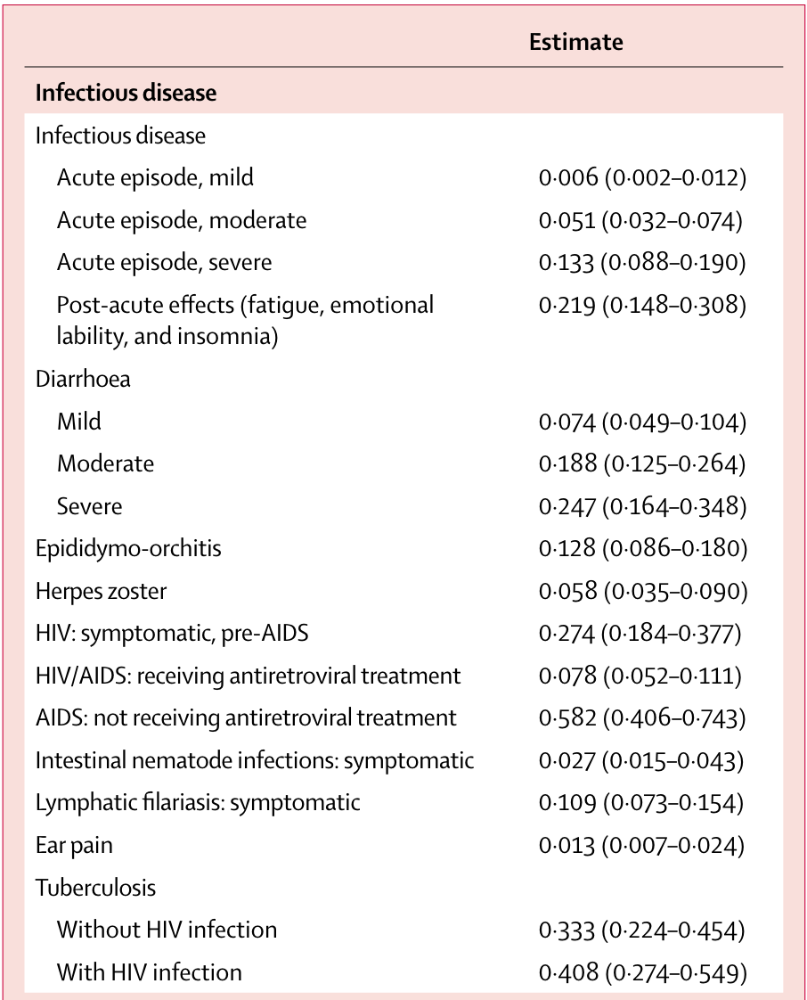
DALYs = YLL + YLD
Years Lived with Disability (YLD): calculated similar to QALYs, utility weight ≈ 1 - disability weight
YLD example: Effective asthma control for 10 years
Disability weight (uncontrolled asthma) = 0.133
Disability weight (controlled asthma) = 0.015
YLD = 10 * 0.015 - 10 * 0.133 = -1.18 DALYs = 1.18 DALYs averted
Years Lived with Disability (YLD)
Calculated similar to QALYs, utility weight ≈ 1 - disability weight
DALYs = YLL + YLD
Example:
Effective asthma control for 10 years
Disability weight (uncontrolled asthma) = ? 0.133
Disability weight (controlled asthma) = ? 0.015
YLD = (10 * 0.015) - (10 * 0.133) = -1.18 DALYs = 1.18 DALYs averted
::::::::
DALYs for CEA
- Recommended calculation approach has changed over time (age weighting, discounting, now both out)
- Some will calculate a “QALY-like” DALY, using utility weight = 1- disability weight
- Discounting still generally done for CEA
Common Practice
- High-income setting: QALYs
- Low- and middle-income setting: DALYs
- Disability weights are freely & publicly available (these weights are required for DALY calculations), it can reduce costs/time/resources compared to collecting QALY estimates
Alternatives to ICERs
ICERs are the most common approach for describing CEA results
Advantages
- Summarizes all aspects of decision problem except WTP (which comes from decision-maker)
Disadvantages
- Ratios can act poorly/are unstable; especially when there is a lot of uncertainty in the denominator, the incremental QALYs are small, or close to zero.
- For cost-saving interventions, the ICER is meaningless.
An Alternative
Maybe all of your interventions are cost-effective under accepted WTPs & your goal, rather, is to quantify the short and long-term health benefits of interventions.
If willing to choose a fixed willingness-to-pay threshold (e.g., λ= 100,000 / QALY), can write down an equation for the contribution of health and cost to utility.
Net Health Benefit (NHB)
Net Monetary Benefit (NMB)
Objective: Select the strategy with the highest NHB/NMB
Net Health Benefit (NHB)
NHB_s = E_s - \frac{C_s}{λ} E_s is effectiveness of strategy s
C_s is cost of s
λ is WTP threshold
- Effectiveness is already in QALYs, no conversion needed
- Cost is in $, needs conversion to QALYs (so need to divide by $/QALY)
Net Monetary Benefit (NMB)
NMB_s = E_s * λ - C_s
where
E_s is effectiveness of strategy s
C_s is cost of s
λ is WTP threshold
Cost is already in $, no conversion needed
Effectiveness is in QALYs, needs conversion to $ (multiply by $/QALY)
Example: NHB
E_1 = 0.07 years
E_2 = 0.10 years
C_1 = 1,500
C_2 = 2,800
λ = 50,000 per year of life saved
ICER = \frac{2800 - 1500}{0.10 - 0.07}
=43,333
Example: NHB
NHB_1 = 0.07−\frac{1500}{50000} =0.040
NHB_2 = 0.10−\frac{2800}{50000} =0.044
IncNHB = 0.044−0.040=0.004
- Suggests a small difference in QALYs between the interventions (.004*365 = 1.46 days)
- The cost adjusted NHB accounts for the tradeoffs between health outcomes and costs into a single measure.
Example: Net Monetary Benefit (NMB)
NMB_1=(0.07×50000)−1500 = 2000
NMB_2=(0.10×50000)−2800=2200
IncNMB =2200−2000=200
- Quantifies this improvement’s value in monetary terms. Treatment 2 provides $200 more net value than Treatment 1 after accounting for both its additional health benefit and higher cost.
NHB/NMB
The strategy with the highest incremental NHB or NMB is the preferred option, given a specified WTP threshold.
A higher NHB means more health gained after accounting for costs.
Key Takeaways
Benefits
- X
- X
- X
- X
Questions?
Next Lecture: Incremental CEA